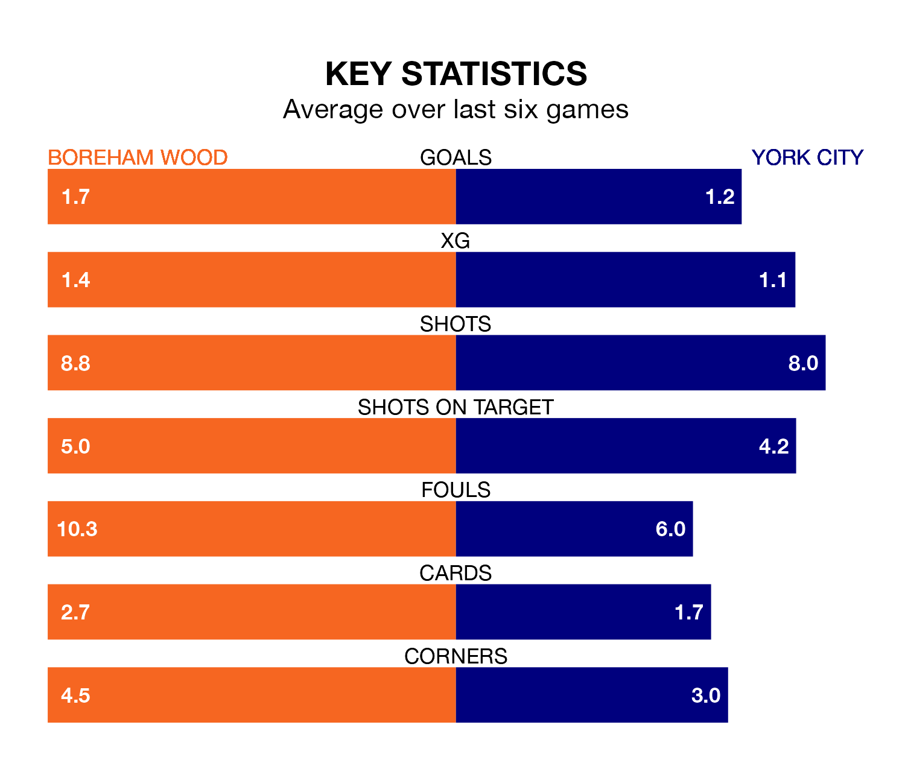

York City face Boreham Wood on Sunday seeking to protect their long unbeaten run in National League.
York are unbeaten in six, with two wins and four draws, ahead of the 2pm kick-off.
They face a Boreham Wood team who have won three and drawn one over the same number of games.
With 32 goals in 26 games so far this season, Boreham Wood are scoring at below the league average rate with 1.2 goals per game. And they are conceding more than average, letting in 41 goals at a rate of 1.6 per game.
York are also below average scorers, with 1.3 goals per game, compared to a league average of 1.5. They have conceded 1.7 goals per game.
City are 17th in the table after 26 games, of which they have won six and drawn 11, earning 29 points.
The Wood are two places ahead of the visitors in 15th, with seven wins and 10 draws putting them on 31 points.
In the last three years, Boreham Wood and York have played each other on three occasions. they drew all of them.
Their last meeting was on September 9, when they played out a 2-2 draw.
Boreham Wood's last match was on December 30, a 2-1 win against Kidderminster Harriers, with Lindokuhle Ndlovu getting the goals for the Wood.
York beat Gateshead 2-0 last time out, on Monday, with Dipo Akinyemi and Will Davies on the scoresheet.
Updated: 10:36, 03/01/24